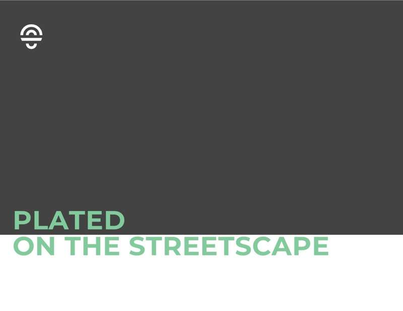
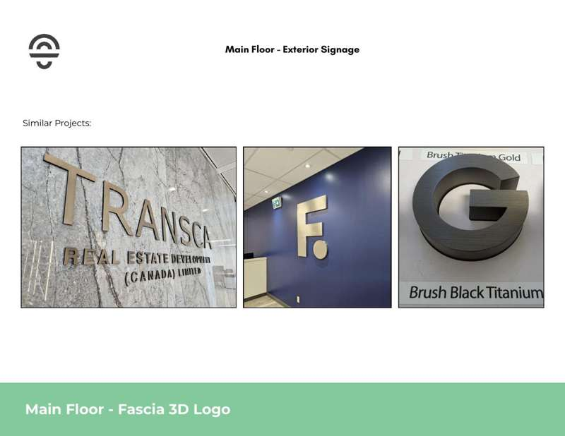
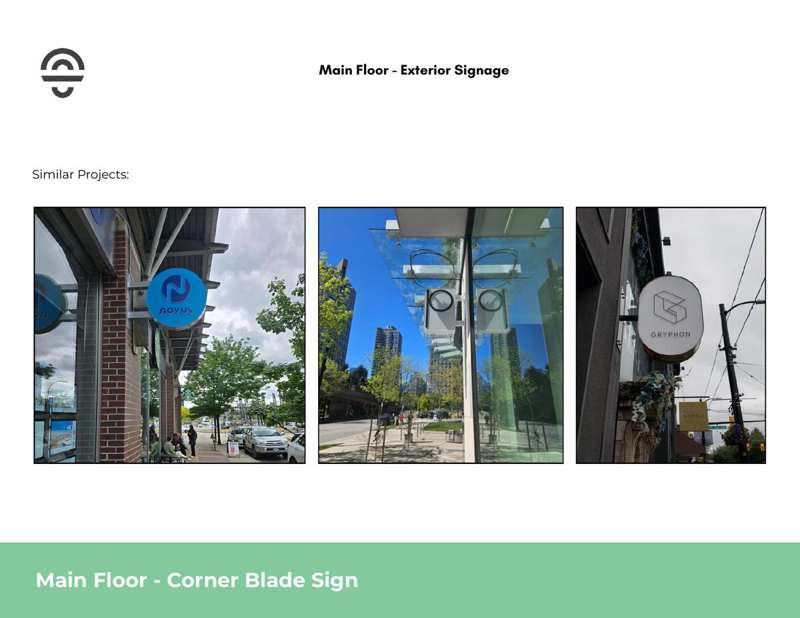
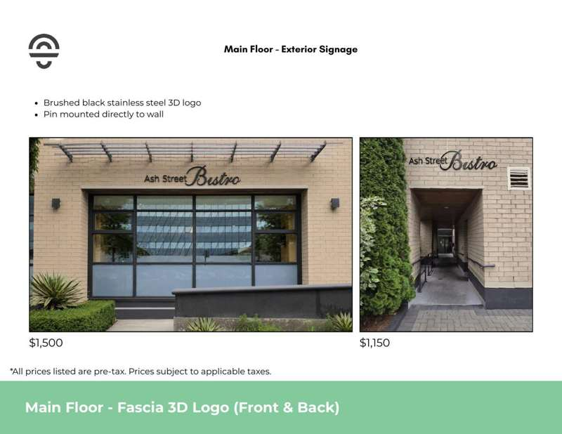
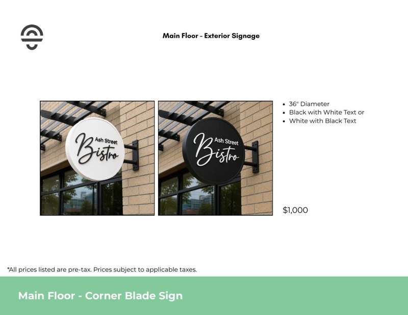
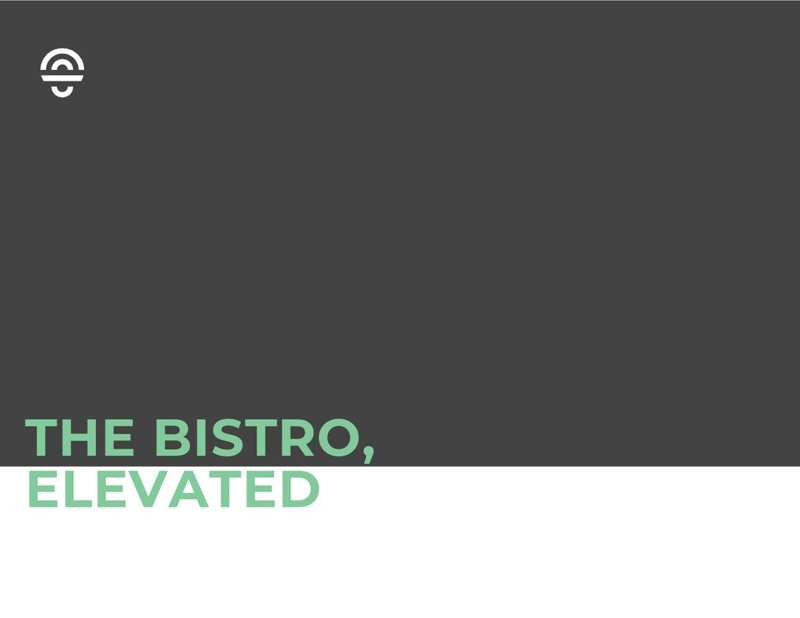
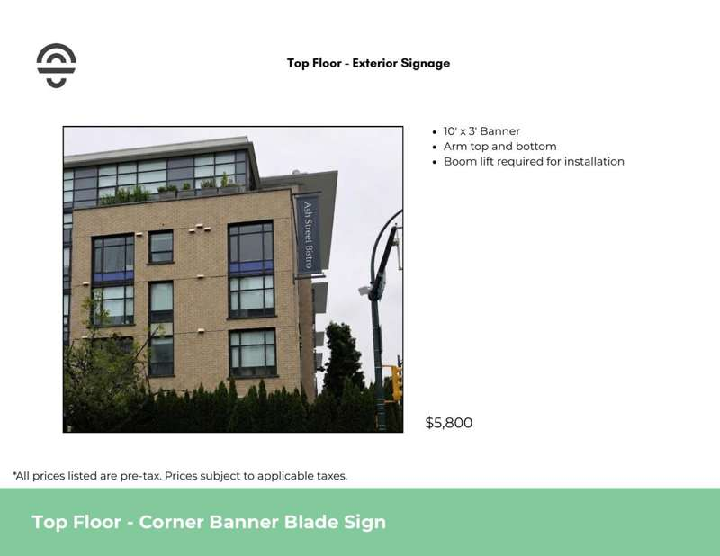

Option 1
Pin-mounted dimensional lettering
Mounting direction
- Pin mount directly to the brick wall.
- Individual letters create shadow and depth.
- Preserves the masonry façade as the field.
Visual priority
- Architectural
- Direct
- Refined
Ash Street Bistro · Exterior signage
The opportunity
Three coordinated touchpoints establish clarity at the main floor, street corner, and back entrance. The shared material palette creates a cohesive, premium identity without competing with the architecture.

Signage strategy
The primary brand moment is supported by a high-visibility blade sign and a durable rear identity treatment. Together, the system is designed to carry the Bistro’s character beyond the façade plane.
Each component uses clean architectural mounting details and a consistent black-anodized, brushed-stroke stainless-steel finish.
The design lens
Can-Design will refine the right balance of material, structure, visibility, and installation detail to make Ash Street Bistro feel unmistakable from the sidewalk and street.
Shared material palette
Black anodized stainless lettering with a brushed-stroke surface creates a dark, satin read from a distance and a tactile premium detail at close range.


Item 2 · Corner blade sign
The corner blade sign gives Ash Street Bistro presence beyond the façade plane and supports legibility for both pedestrians and passing vehicles.
Concept direction: 36-inch diameter; black face with white text, or white face with black text; mounted as a corner blade sign.
Item 3 · Back entrance exterior signage
Stainless steel letters in the black anodized, brushed-stroke finish are flush mounted to the brick wall. The quiet installation keeps the rear approach clear, durable, and visually consistent with the main-floor treatment.
Design intent: durable · discreet · consistent

Reference gallery
Reference imagery follows the recommended items so the presentation stays focused on Ash Street Bistro first.

Material presence and depth on architectural surfaces.

Perpendicular visibility that reaches into the streetscape.

Clean, integrated structures that respect the building.
Confirm the main-floor option, refine the blade and rear-location details, then add fabrication and installation scope.